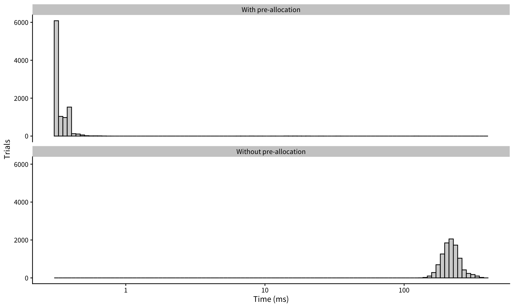

library(tidyverse)
# Set global ggplot theme
theme_set(cowplot::theme_cowplot(font_size=12,
font_family = "Source Sans Pro"))5 Control Flow
Notes on Advanced R (2nd Ed)
5.1 if statements
if statement example:
grade <- function(x) {
if (x > 90) {
"A"
} else if (x > 80) {
"B"
} else if (x > 50) {
"C"
} else {
"F"
}
}You can assign the result of an if statement:
x1 <- if (TRUE) 1 else 2
x2 <- if (FALSE) 1 else 2
c(x1, x2)[1] 1 2
5.2 switch() statement
Warning
Only use switch() with character inputs!
You can replace this:
x_option <- function(x) {
if (x == "a") {
"option 1"
} else if (x == "b") {
"option 2"
} else if (x == "c") {
"option 3"
} else {
stop("Invalid `x` value")
}
}with this more concise version using switch()
If multiple outputs share a value, you can use this special syntax:
5.3 for loops
forassigns the item to the current environment, overwriting any existing variable with the same name!
i <- 100
for (i in 1:3) {}
print(i)[1] 3There are two ways to terminate a for loop early:
5.3.1 Pre-allocation
Remember to pre-allocate space if assigning in a for loop. Here’s a demonstration of the speed difference.
# With pre-allocation
f2 <- function(n=1e4) {
# Pre-allocate the memory
vec <- numeric(n)
for(i in 1:n) vec[i] <- i
}bench::mark(`Without pre-allocation` = f1(),
`With pre-allocation` = f2(),
iterations = 1e4) %>%
mutate(expression = as.character(expression)) %>%
unnest_longer(time) %>%
mutate(time = as.numeric(time) * 1000) %>%
ggplot() +
aes(x=time) +
geom_histogram(bins=100, color="black", fill="lightgray") +
scale_x_log10() +
facet_wrap(~expression, nrow = 2) +
labs(x = "Time (ms)",
y = "Trials")